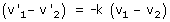

Condición de choque frontal La velocidad relativa después del choque es una fracción de la velocidad relativa antes del choque y tiene sentido contrario:  k es el coeficiente de restitución que varia entre 1 (Choque elástico) y 0 (Choque totalmente inelástico) |